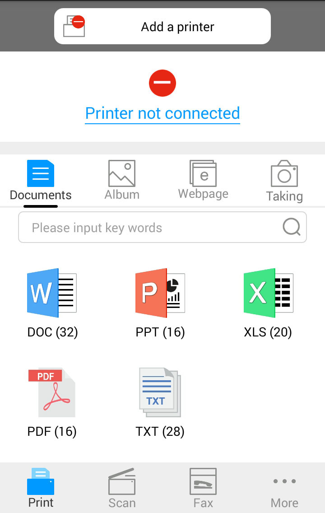

6. Pantum Mobile Print
6.1. Vad är Pantum Mobile Print?
Pantum Mobile Print är en gratisapplikation som kan användas för direkt utskrift av bilder, dokument och webbsidor från mobiltelefonen. Mobil utskrift av Pantum är tillämpad för Android 4.4-8.0 mobila operativsystem med en upplösning på 480*800dpi eller högre och 3,5-tums skärm. Den ansluter din mobiltelefon till skrivaren via Wi-Fi-accesspunkter. Det enda du behöver göra är att installera Pantum Mobile Print-applikationen för att konfigurera nätverksinställningarna. Sedan hittar den automatiskt kompatibla skrivare för utskrift – mycket bekvämt och effektivt.
6.2. Ladda ned Pantum Mobile Print
Gå till Pantums officiella webbsida www.pantum.com för att ladda ned Pantum Mobile Print.
6.3. Mobilsystem som stödjer Pantum Mobile Print
Android OS 4.4-8.0 tillämpas.
6.4. Hur du använder mobiltelefonen för mobil utskrift
6.4.1. För Android Enheter
6.4.1.1. Tidigare förberedelse
1. En skrivare som har trådlös nätverksfunktion.
2. Android mobilenhet.
6.4.1.2. Utförande streg
1. Slå på skrivaren.
2. Klicka på “PANTUM” ikonen på huvudskärmen på en Android enhet och följande interface kommer att dyka upp.

3. Klicka på "Add a printer", välj sedan sättet du är van vid för att lägga till skrivaren.
4. Välj funktionen du behöver och ställ in den för att möta dina funktionsbehov .
 |
Obs! |
• Om utskriften misslyckas, var god kontrollera om din Android mobilenhet har tillgång till det trådlösa nätverk som din skrivare är ansluten till. • Om Android enheten inte kan upptäcka någon skrivare vänlogen kontrollera om om strömmen på skrivaren är påsatt och om skrivaren är på. • För mer detaljer, var god ta del av den användarguide för mobiutskrift som är bifogad. |